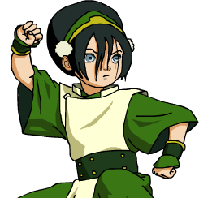
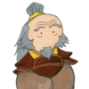

| Ячейка 1.1 | Ячейка 1.2 | ||
| Ячейка 2.1 | Ячейка 2.2 | Ячейка 2.3 | Ячейка 2.4 |
| Ячейка 3.1 | Ячейка 3.2 | Ячейка 3.3 | Ячейка 3.4 |
| Ячейка 4 | |||
| Ячейка 5.1 | Ячейка 5.2 | Ячейка 5.3 | Ячейка 5.4 |
| Ячейка 6.1 | Ячейка 6.2 | Ячейка 6.3 | |
| Фото | Имя | Стихия | Выдающиеся способности |
|---|---|---|---|
| Аанг | Воздух, Аватар | Остановил столетнюю войну, маг энергии | |
|  | Тоф | Земля | Первый маг металла |
|  | Айро | Огонь | Сохранил последних драконов, изобрел технику перенаправления молнии |
| Катара | Вода | Единственный маг воды на Южном полюсе, владеет целительной техникой |